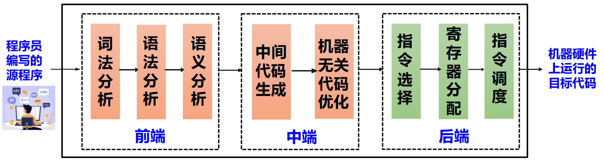
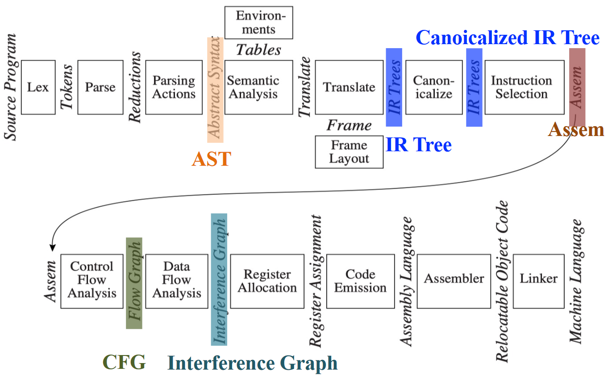

概述¶
约 1991 个字 28 行代码 预计阅读时间 7 分钟
编程语言及设计¶
编程语言¶
定义：A programming language is a notation for describing computations to people and to machines.
常见的编程语言泛型包括：
- 过程式 (Procedural): C, Fortran, Pascal
- 函数式 (Functional): Lisp/Scheme, Haskell
- 逻辑式 (Logic): Prolog, Datlog
- 面向对象 (Object-Oriented): Smalltalk, Java, Eiffel
语法与语义¶
- 语法 (Syntax): 语言的结构和形式，指明什么是合法的程序
- 语义 (Semantics): 语言的含义，指明合法程序的行为
- 操作语义：程序的执行过程
- 公理语义：程序的推导过程
- 指称语义：程序计算的函数
编译器及其形式¶
编译器¶
编译器是一个程序，读入源程序并将其翻译成语义等价的目标程序（Translate from the syntax of one language to another but preserve the semantics）
其中，目标程序如果是可执行的机器语言程序，则可以被用户调用，处理输入并产生输出；如果是汇编语言程序，则须经汇编器汇编后方可执行。若从狭义看来：
- 源程序：用某种高级语言编写
- 目标程序：用目标代码或机器语言编写
- 过程如：C++ => 机器语言
若从广义来看：
- 目标程序：介于源语言和机器语言之间的“中间语言”，可以是另一种高级语言
- 过程如：C++ => C，Pascal => C
C 语言编译器

Clang 编译器的优化等级
| 优化等级 | 简要说明 |
|---|---|
| -Ofast | 在 -O3 级别的基础上，开启更多激进优化项，该优化等级不会严格遵循语言标准 |
| -O3 | 在 -O2 级别的基础上，开启了更多的高级优化项，以编译时间、代码大小、内存为代价获取更高的性能 |
| -Os | 在 -O2 级别的基础上，开启降低生成代码体量的优化 |
| -O2 | 开启了大多数中级优化，会改善编译时间开销和最终生成代码性能 |
| -O/-O1 | 优化效果介于 -O0 和 -O2 之间 |
| -O0 | 默认优化等级，即不开启编译优化，只尝试减少编译时间 |
解释器¶
解释：在一种语言的机器上，直接执行用另一种语言写的程序的过程，称为解释
解释器：接受用户提供的输入，进行解释并逐句执行
编译器的其他形式¶
- 交叉编译器 (Cross Compiler)
- 在一个平台上生成另一个平台上的代码，如 PC ->
arm-linux-gcc-> ARM
- 在一个平台上生成另一个平台上的代码，如 PC ->
- 增量编译器 (Incremental Compiler)
- 增量地编译源程序（只编译修改的部分）
- 即时编译器 (Just-in-time Compiler)
- 在运行时对 IR 中每个被调用的方法进行编译，得到目标机器的本地代码，如 Java VM 中的即时编译器
- 预先编译器 (Ahead-of-time Compiler)
- 在程序执行前将 IR 翻译成本地码，如 ART 中的 AOT
Java 虚拟机
编译器的作用¶
- 提高开发效率
- 屏蔽硬件架构信息
- 支持高层编程抽象
- 提高运行性能
- 硬件无关编译优化
- 硬件相关编译优化
- 安全可靠
- 类型安全
- 功能正确
- 信息流安全
编译优化
常见的编译优化思路 优化可能在不同的阶段进行，具体的分类包括：局部/全局/过程间，机器无关/及其相关
一些 LLVM 编译之外的工具链
| 工具 | 作用 |
|---|---|
| Clang static analyzer | 静态代码查错 |
| llcov | 动态监控覆盖率 |
| AddressSanitizer (ASan) | 动态监控安全问题 |
| DataflowSanitizer (DFSan) | 动态污点分析 |
| libFuzzer | 模糊测试 |
| LLDB | 调试器 |
编译器的阶段¶
编译过程概览¶
一个过程划分的示例如下：

过程中涉及到：
- 符号表 (Symbol Table)
- 记录程序中变量、函数等对象的各种属性
- 符号表可由编译器的各个步骤使用
- 错误处理 (Error Handler)
- 语法错误: 如算术表达式的括号不配对
- 语义错误: 如算符作用于不相容的运算对象
关于过程划分
前中后端的划分不一定和上图过程完全一致
一些比较重要的过程¶
词法分析¶
词法分析（Lexing/Scanning/Lexical Analysis）：将程序字符流分解为 token 序列的过程

示例
以如下程序为例
int main() {
float initial, rate, position;
initial = 2;
rate = 0.1;
position = initial + rate * 60;
return 0;
}
int 'int' [StartOfLine] Loc=<a.c:1:1>
identifier 'main' [LeadingSpace] Loc=<a.c:1:5>
l_paren '(' Loc=<a.c:1:9>
r_paren ')' Loc=<a.c:1:10>
l_brace '{' [LeadingSpace] Loc=<a.c:1:12>
float 'float' [StartOfLine] [LeadingSpace] Loc=<a.c:2:5>
identifier 'initial' [LeadingSpace] Loc=<a.c:2:11>
comma ',' Loc=<a.c:2:18>
identifier 'rate' [LeadingSpace] Loc=<a.c:2:20>
comma ',' Loc=<a.c:2:24>
identifier 'position' [LeadingSpace] Loc=<a.c:2:26>
semi ';' Loc=<a.c:2:34>
identifier 'initial' [StartOfLine] [LeadingSpace] Loc=<a.c:4:5>
equal '=' [LeadingSpace] Loc=<a.c:4:13>
numeric_constant '2' [LeadingSpace] Loc=<a.c:4:15>
semi ';' Loc=<a.c:4:16>
identifier 'rate' [StartOfLine] [LeadingSpace] Loc=<a.c:5:5>
equal '=' [LeadingSpace] Loc=<a.c:5:10>
numeric_constant '0.1' [LeadingSpace] Loc=<a.c:5:12>
semi ';' Loc=<a.c:5:15>
identifier 'position' [StartOfLine] [LeadingSpace] Loc=<a.c:6:5>
equal '=' [LeadingSpace] Loc=<a.c:6:14>
identifier 'initial' [LeadingSpace] Loc=<a.c:6:16>
plus '+' [LeadingSpace] Loc=<a.c:6:24>
identifier 'rate' [LeadingSpace] Loc=<a.c:6:26>
star '*' [LeadingSpace] Loc=<a.c:6:31>
numeric_constant '60' [LeadingSpace] Loc=<a.c:6:33>
semi ';' Loc=<a.c:6:35>
return 'return' [StartOfLine] [LeadingSpace] Loc=<a.c:8:5>
numeric_constant '0' [LeadingSpace] Loc=<a.c:8:12>
semi ';' Loc=<a.c:8:13>
r_brace '}' [StartOfLine] Loc=<a.c:9:1>
eof '' Loc=<a.c:9:2>
语法分析¶
语法分析（Parsing/Syntax Analysis）: 将记号序列解析为语法结构（一般为抽象语法树 AST）的过程
示例
同上一示例代码，可以使用
查看词法分析的结果TranslationUnitDecl 0x5a0edc6d2588 <<invalid sloc>> <invalid sloc>
|-TypedefDecl 0x5a0edc6d2db0 <<invalid sloc>> <invalid sloc> implicit __int128_t '__int128'
| `-BuiltinType 0x5a0edc6d2b50 '__int128'
|-TypedefDecl 0x5a0edc6d2e20 <<invalid sloc>> <invalid sloc> implicit __uint128_t 'unsigned __int128'
| `-BuiltinType 0x5a0edc6d2b70 'unsigned __int128'
|-TypedefDecl 0x5a0edc6d3128 <<invalid sloc>> <invalid sloc> implicit __NSConstantString 'struct __NSConstantString_tag'
| `-RecordType 0x5a0edc6d2f00 'struct __NSConstantString_tag'
| `-Record 0x5a0edc6d2e78 '__NSConstantString_tag'
|-TypedefDecl 0x5a0edc6d31c0 <<invalid sloc>> <invalid sloc> implicit __builtin_ms_va_list 'char *'
| `-PointerType 0x5a0edc6d3180 'char *'
| `-BuiltinType 0x5a0edc6d2630 'char'
|-TypedefDecl 0x5a0edc6d34b8 <<invalid sloc>> <invalid sloc> implicit __builtin_va_list 'struct __va_list_tag[1]'
| `-ConstantArrayType 0x5a0edc6d3460 'struct __va_list_tag[1]' 1
| `-RecordType 0x5a0edc6d32a0 'struct __va_list_tag'
| `-Record 0x5a0edc6d3218 '__va_list_tag'
`-FunctionDecl 0x5a0edc72a940 <a.c:1:1, line:9:1> line:1:5 main 'int ()'
`-CompoundStmt 0x5a0edc72ae30 <col:12, line:9:1>
|-DeclStmt 0x5a0edc72abd0 <line:2:5, col:34>
| |-VarDecl 0x5a0edc72aa48 <col:5, col:11> col:11 used initial 'float'
| |-VarDecl 0x5a0edc72aac8 <col:5, col:20> col:20 used rate 'float'
| `-VarDecl 0x5a0edc72ab48 <col:5, col:26> col:26 used position 'float'
|-BinaryOperator 0x5a0edc72ac40 <line:4:5, col:15> 'float' '='
| |-DeclRefExpr 0x5a0edc72abe8 <col:5> 'float' lvalue Var 0x5a0edc72aa48 'initial' 'float'
| `-ImplicitCastExpr 0x5a0edc72ac28 <col:15> 'float' <IntegralToFloating>
| `-IntegerLiteral 0x5a0edc72ac08 <col:15> 'int' 2
|-BinaryOperator 0x5a0edc72acb8 <line:5:5, col:12> 'float' '='
| |-DeclRefExpr 0x5a0edc72ac60 <col:5> 'float' lvalue Var 0x5a0edc72aac8 'rate' 'float'
| `-ImplicitCastExpr 0x5a0edc72aca0 <col:12> 'float' <FloatingCast>
| `-FloatingLiteral 0x5a0edc72ac80 <col:12> 'double' 1.000000e-01
|-BinaryOperator 0x5a0edc72ade0 <line:6:5, col:33> 'float' '='
| |-DeclRefExpr 0x5a0edc72acd8 <col:5> 'float' lvalue Var 0x5a0edc72ab48 'position' 'float'
| `-BinaryOperator 0x5a0edc72adc0 <col:16, col:33> 'float' '+'
| |-ImplicitCastExpr 0x5a0edc72ada8 <col:16> 'float' <LValueToRValue>
| | `-DeclRefExpr 0x5a0edc72acf8 <col:16> 'float' lvalue Var 0x5a0edc72aa48 'initial' 'float'
| `-BinaryOperator 0x5a0edc72ad88 <col:26, col:33> 'float' '*'
| |-ImplicitCastExpr 0x5a0edc72ad58 <col:26> 'float' <LValueToRValue>
| | `-DeclRefExpr 0x5a0edc72ad18 <col:26> 'float' lvalue Var 0x5a0edc72aac8 'rate' 'float'
| `-ImplicitCastExpr 0x5a0edc72ad70 <col:33> 'float' <IntegralToFloating>
| `-IntegerLiteral 0x5a0edc72ad38 <col:33> 'int' 60
`-ReturnStmt 0x5a0edc72ae20 <line:8:5, col:12>
`-IntegerLiteral 0x5a0edc72ae00 <col:12> 'int' 0
语义分析¶
语义分析（Semantic Analysis）：收集标识符的类型等属性信息的过程
中间代码生成¶
中间代码/中间表示（IR）：源语言与目标语言之间的桥梁

示例
同上一示例代码，可以使用
查看词法分析的结果; ModuleID = 'a.c'
source_filename = "a.c"
target datalayout = "e-m:e-p270:32:32-p271:32:32-p272:64:64-i64:64-f80:128-n8:16:32:64-S128"
target triple = "x86_64-pc-linux-gnu"
; Function Attrs: noinline nounwind optnone
define dso_local i32 @main() #0 {
entry:
%retval = alloca i32, align 4
%initial = alloca float, align 4
%rate = alloca float, align 4
%position = alloca float, align 4
store i32 0, ptr %retval, align 4
store float 2.000000e+00, ptr %initial, align 4
store float 0x3FB99999A0000000, ptr %rate, align 4
%0 = load float, ptr %initial, align 4
%1 = load float, ptr %rate, align 4
%mul = fmul float %1, 6.000000e+01
%add = fadd float %0, %mul
store float %add, ptr %position, align 4
ret i32 0
}
attributes #0 = { noinline nounwind optnone "min-legal-vector-width"="0" "no-trapping-math"="true" "stack-protector-buffer-size"="8" "target-features"="+cx8,+mmx,+sse,+sse2,+x87" }
!llvm.module.flags = !{!0}
!llvm.ident = !{!1}
!0 = !{i32 1, !"wchar_size", i32 4}
!1 = !{!"clang version 16.0.6"}
基于中间表示的优化¶
基于中间表示的优化：基于中间表示进行分析与变换，以降低执行时间、减少资源消耗等

示例
使用 -O3 优化
与上一示例对比，得到的结果明显更短; ModuleID = 'a.c'
source_filename = "a.c"
target datalayout = "e-m:e-p270:32:32-p271:32:32-p272:64:64-i64:64-f80:128-n8:16:32:64-S128"
target triple = "x86_64-pc-linux-gnu"
; Function Attrs: mustprogress nofree norecurse nosync nounwind willreturn memory(none)
define dso_local i32 @main() local_unnamed_addr #0 {
entry:
ret i32 0
}
attributes #0 = { mustprogress nofree norecurse nosync nounwind willreturn memory(none) "min-legal-vector-width"="0" "no-trapping-math"="true" "stack-protector-buffer-size"="8" "target-features"="+cx8,+mmx,+sse,+sse2,+x87" }
!llvm.module.flags = !{!0}
!llvm.ident = !{!1}
!0 = !{i32 1, !"wchar_size", i32 4}
!1 = !{!"clang version 16.0.6"}
目标代码生成¶
目标代码生成：把中间表示形式翻译到目标语言的过程，可涉及指令选择、寄存器分配、指令调度过程

示例
使用
进行代码生成整体示例：Tiger 编译器¶

- AST (抽象语法树): 语法分析 + "Parsing Actions" 生成
- IR Tree: 语义分析后按一定规则生成（树型中间表示）
- Canonicalized IR Tree: 对 IR Tree 做变换所得（方便生成汇编）
- Assem: 指令选择器生成（一种特殊的汇编）
- CFG (Control Flow Graph, 控制流图): 方便进行数据流分析
- 如活跃变量分析（Liveness Analysis）
- Interference Graph: 从活跃变量分析的结果构造，用于指导寄存器分配
其他¶
推荐一个玩具：Compiler Explorer
创建日期: 2024年3月6日 22:25:20